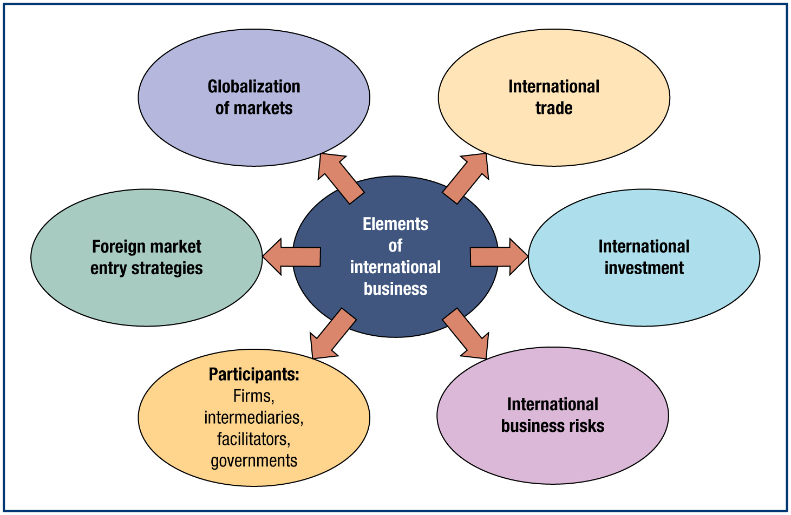
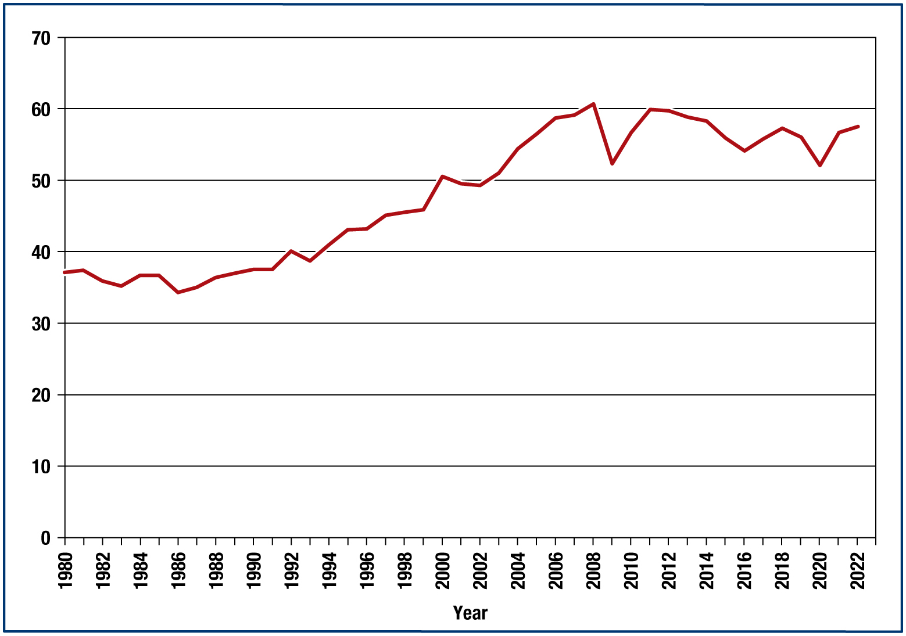
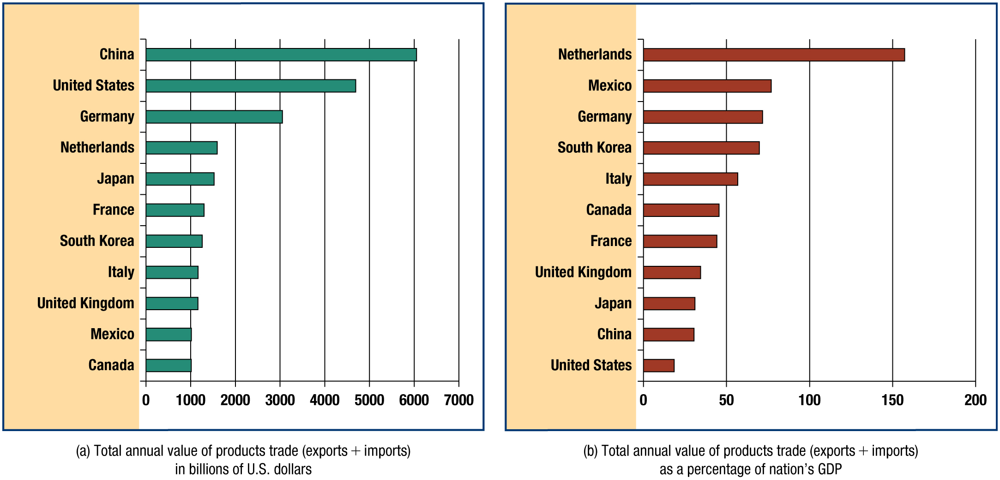
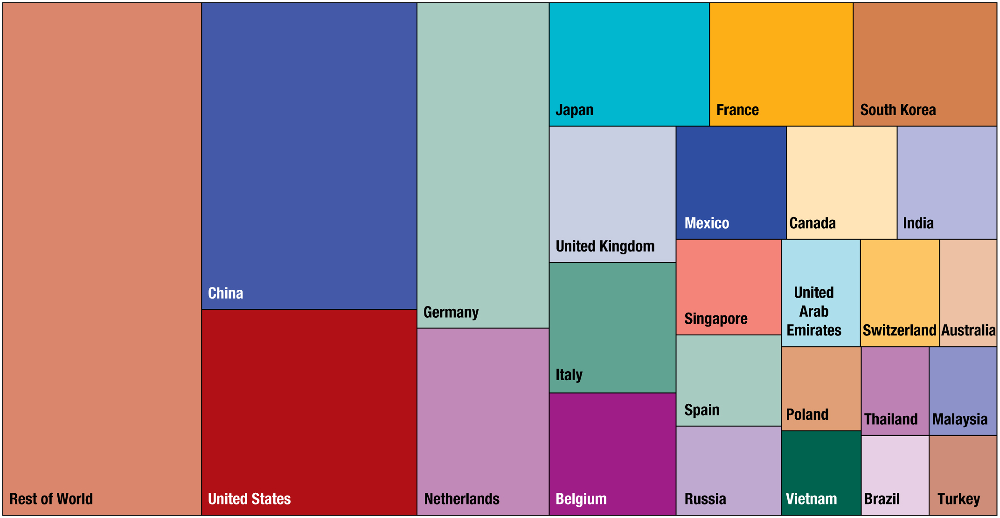
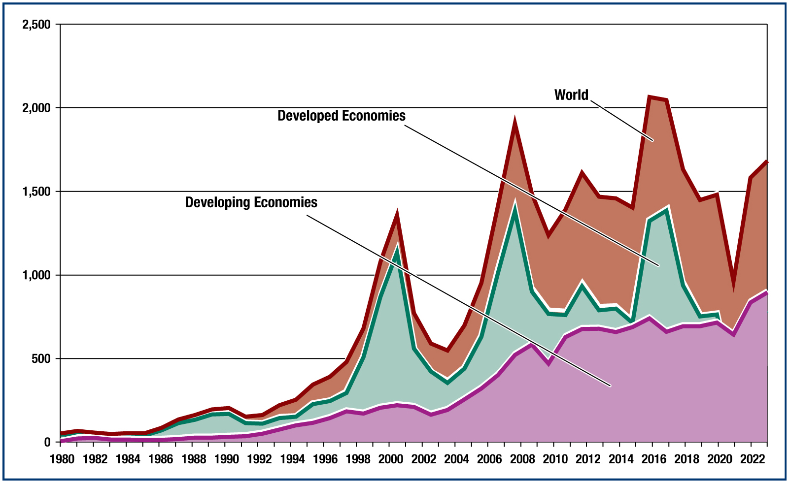
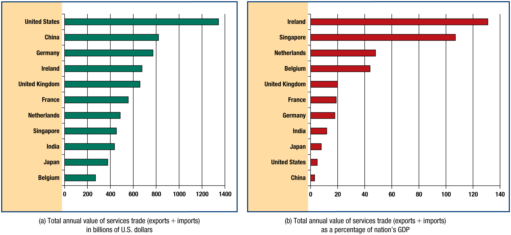
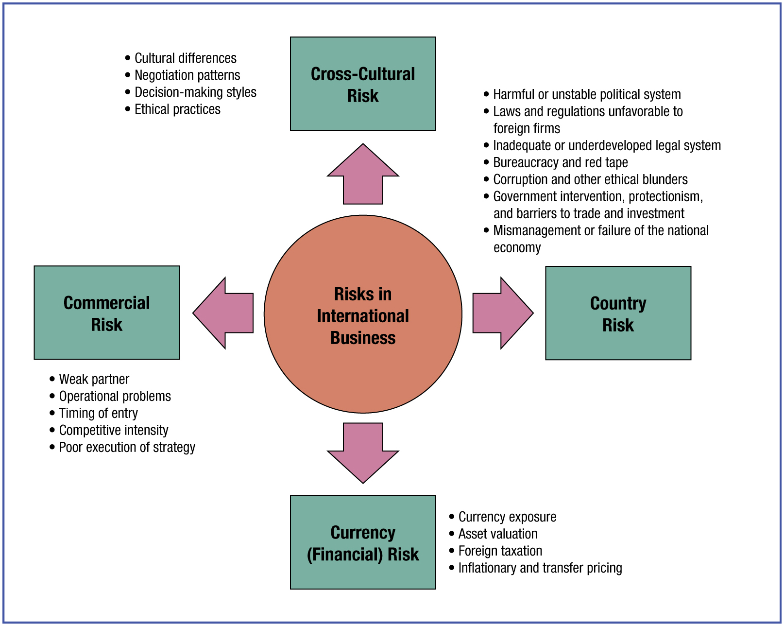
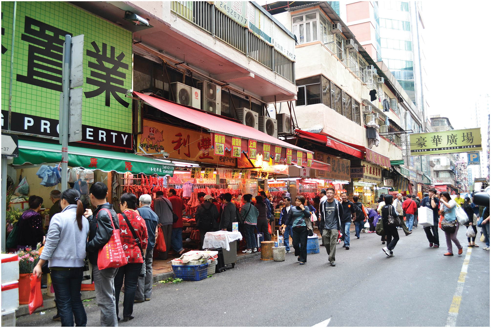

Introduction:
What Is International Business?
International Business: The New Realities — Chapter 1
Cavusgil, Knight & Riesenberger, 6th Global Edition
International Summer UniversityWU 2026 · Dr. Arne Floh

International Business: The New Realities — Chapter 1
Cavusgil, Knight & Riesenberger, 6th Global Edition
International Summer UniversityWU 2026 · Dr. Arne Floh




Source: based on data from the IMF, World Economic Outlook Database, April 2023 (Exhibit 1.4).

Total value of exports + imports: (a) in billions of US$ and (b) as a percentage of national GDP. Source: World Bank, WTO, UNCTAD (2023).

Share of each country’s combined exports and imports as a percentage of total world trade. Source: World Bank, WTO, UNCTAD (2023).

Source: UNCTADstat, Inward FDI Flows; OECD, FDI Flows; World Bank, Net FDI Inflows (2023) (Exhibit 1.7).
| Industry | Representative activities | Representative companies |
|---|---|---|
| Architectural, construction and engineering | Construction, power utilities, design and engineering services for airports, hospitals, dams | ABB, Bechtel Group, Halliburton, Kajima, Philip Holzman, Skanska AB |
| Banking, finance and insurance | Banking, insurance, risk evaluation and management | Bank of America, CIGNA, Barclays, HSBC, Ernst & Young |
| Education, training and publishing | Management, technical and language training; publishing | Berlitz, Kumon, NOVA, Pearson, Elsevier |
| Entertainment | Movies, recorded music, Internet-based entertainment | Time Warner, Sony, Virgin, MGM |
| Information services | E-commerce, e-mail, funds transfer, data interchange and processing, computer services | Infosys, EDI, Hitachi, Qualcomm, Cisco |
| Professional business services | Accounting, advertising, legal, management consulting | Leo Burnett, EYLaw, McKinsey, A.T. Kearney, Booz Allen Hamilton |
| Transportation | Aviation, ocean shipping, railroads, trucking, airports | Maersk, Santa Fe, Port Authority of New Jersey, SNCF |
| Travel and tourism | Lodging, food and beverage, air and ocean carriers, railways | Carlson Wagonlit, Marriott, British Airways |

Total value of services exports + imports: (a) in billions of US$ and (b) as a percentage of national GDP. Source: World Bank, WTO, UNCTAD (2023).


Source: Fortune, “Global 500,” 2022–2023 (Exhibit 1.9).
The British Wellcome Trust funds NGOs and research initiatives working in collaboration across borders.



A popular shopping street in Beijing, China.

Department of Global Trade
WU Vienna
Dr. Arne Floh
Senior Lecturer in International Marketing
Deputy Program Director MSc Export- and Internationalisation Management
Welthandelsplatz 1, 1020 Wien, Austria
www.wu.ac.at